Olen 24-vuotias ja opiskelen tällä hetkellä Tietojenkäsittelyä Vaasan Ammattikorkeakoulussa.
Kiinnostukseni kohteisiin kuuluu erityisesti verkkosivustojen ja -ohjelmistojen kehitys, sekä niiden suunnittelu.
Työkokemusta minulta löytyy muutama vuosi ravintola-alalta, mutta kokemusta IT-alalla työskentelystä minulla on vain työharjoittelusta Webaulalla.
Vapaa-aikaani vietän mielelläni omien koodaus/ohjelmointi projektien sekä liikunnan parissa. Pidän myös paljon erilaisten ruokien ja leivonnaisten valmistamisesta.
Koulutus
Vaasan ammattikorkeakoulu, Tietojenkäsittelyn tradenomi,AMK (03.09.2019 - jatkuu)
Työskentelin ravintolakokkina huvipuisto Powerparkin ravintoloissa vuosien 2014–2016 ja 2020 kesinä.
Työtehtäviini kuului tavanomaiset keittiön tehtävät kuten keittiönkunnossapito, kuormanpurkaminen ja esivalmisteiden valmistaminen. Valmistin a la carte annoksia, hampurilaisia, pizzoja ja lounas ruokia.
OperaGrill 2017 & 2018
Työskentelin Savonlinnan OperaGrillissä ravintolakokkina kahtena kesänä vuosina 2017 ja 2018.
Työtehtäviini kuului tavanomaiset keittiön tehtävät kuten keittiönkunnossapito, kuormanpurkaminen ja esivalmisteiden valmistaminen. Valmistin a la carte annoksia ja hampurilaisia käyttäen hiiligriiliä.
Rosso 2017, 2018 & 2019
Työskentelin yrityksessä määräaikaisena työntekijänä vuosina 2017, 2018 ja 2019.
Tehtävänä yrityksessä oli a la carte annosten, pizzojen ja lounasruokien valmistaminen sekä tavanomaiset keittiön tehtävät kuten keittiönkunnossapito, kuormanpurkaminen ja esivalmisteiden valmistaminen.
Pancho Villa 2021
Olin töissä Pancho Villassa alkuvuoden ja kesän 2021.
Tehtävänä yrityksessä oli annosten kuten hampurilaisten ja meksikolaistyylisten annosten valmistaminen ja keittiön tavanomaiset kuten keittiönkunnossapito, kuormanpurkaminen ja esivalmisteiden valmistaminen.
Ensimmäinen IT-alan työ. Tehtävänä yrityksessä Wordpress sivustojen rakentaminen, testaaminen ja sisällönpäivitys asiakas yrityksille.
Suunnittelu
Aloitan usein verkkosivujen tekemisen suunnittelemalla niiden ulkoasun. Ulkoasun suunnitteluun käytän Figmaa, jonka olen havainnut olevan itselleni mieluisin. Myös Adobe XD on tuttu, mutta sen käyttö on jäänyt vähemmälle.
Kuvia tai logoja muokkaan Photoshopilla, gimpillä tai inkscapella.
Frontend
Verkkosivujen julkisivun rakentaminen luonnistuu minulta luontevasti HTML ja CSS teknologioita käyttäen. Koen että osaan html ja css teknologiat hyvin, sillä saan niillä aikaiseksi kaiken mitä yritän niillä saavuttaa. Olen myös kiinnostunut lisäämään käytettävyyttä ja saatavuutta verkkosivuillani ja olen aina kiinnostunut kehittymään sen saralla.
Javascriptin avulla luon interaktiivisuutta verkkosivuille. Osaan tehdä yleisiä DOM manipulaatioita sen avulla. Pyrin jatkuvasti kehittämään taitojani javascriptin kanssa ja tavoitteenani on tulevaisuudessa opetella jokin frameworkki kuten React tai Vue.js.

Backend
Dynaamisuuta luon sivustoille käyttäen PHPta, joka on minulle tutuin palvelinpuolen skriptikieli. En ole käyttänyt PHPta koulun ulkopuolella usein, mutta se on tällä hetkellä harjoittelussa.
Osaan SQL kysely kieltä ihan hyvin. Tietokantana minulle tutuimmat ovat MySQL ja MariaDB. Relaatiotietokantojen suunnittelussa koen tarvitsevani vielä harjoitusta, sillä kaikki kokemukseni tulee siitä pelkästään koulusta.
Koulussa käytimme ohjelmoinnin opiskeluun C# kieltä ja olen tehnyt muutamia yksinkertaisia ohjelmia sen avulla koulussa, mutta en ole käyttänyt sitä henkilökohtaisten projektien tekemiseen.
Pythonin opettelin mielenkiinnosta ja olen tehnyt muutamia perusteiden opetteluun soveltuvia ohjelmia sillä.
Worpress
Wordpress sivustojen tekemisestä minulla on aitoa työkokemusta ja koen hallitsevani sen hyvin. Wordpressillä olen tehnyt useita sivustoja yrityksille käyttäen lisäosia kuten Elementor, Woocommerce, Polylang, FacetWP ja Gravityforms.
Versionhallinta
Versionhallintana minulle tutuin on git ja käytän sitä GitHubin kanssa.